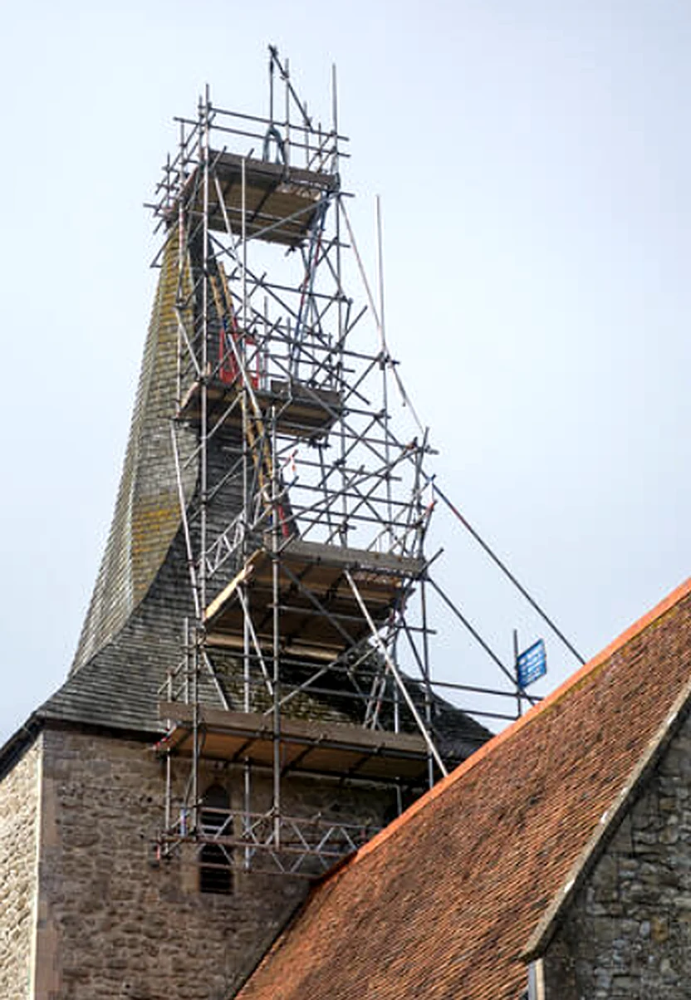
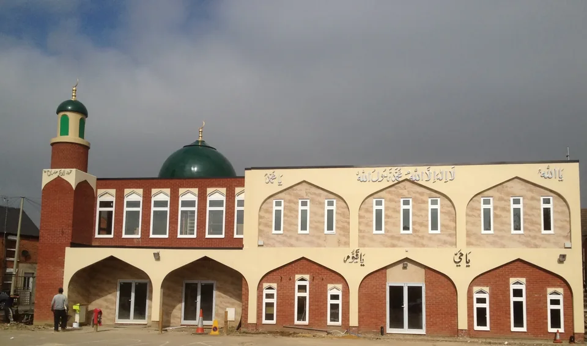
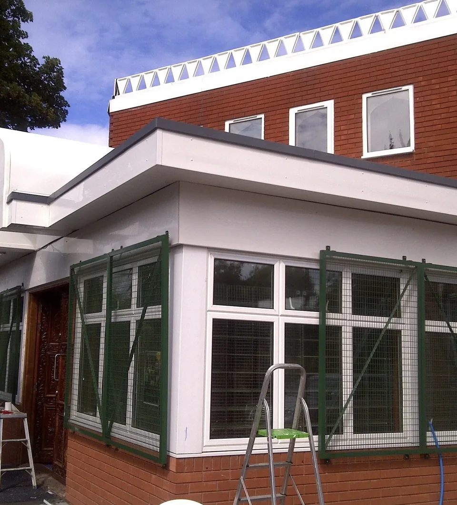

Oxford
A Civic specialism
Mosques, churches and community prayer spaces

Working with communities
Civic has built, extended and renovated mosques, churches and other places of prayer, working with many different communities. Whether you are planning a new building, an extension or the conversion of an existing property, we can help from the early drawings through to handover.
Often, yes. We can agree working hours, separate site access and phases so that prayers, services and community activities can continue. Tell us your regular times and any important dates.
Yes. Many community projects are delivered in stages. We can help you split the work into practical phases, so each stage leaves the building safe and usable.

Oxford
Banbury · OX16

Maidenhead · SL6